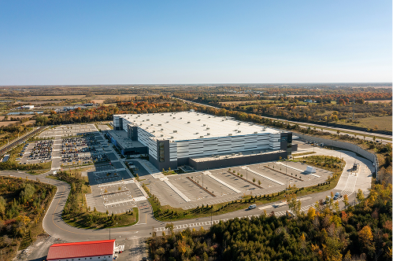
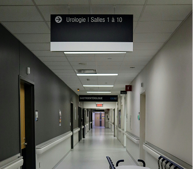
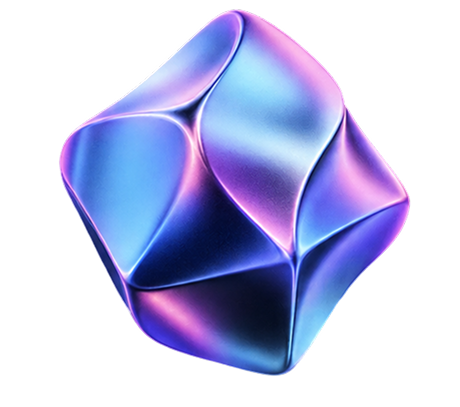
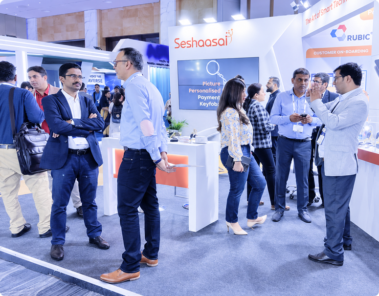

Enhanced
Operational Efficiency
Improve throughput, productivity and profitability by reducing manual effort and errors across operations.
Atoll enables businesses to measure the physical world to improve operations and profitability. We provide visibility of assets, personnel, inventory, equipment and environmental conditions across complex operations.

Atoll is part of Seshaasai Technologies Limited, combining specialist traceability expertise with the scale and experience of an established enterprise technology organisation.
BENEFITS
Improve throughput, productivity and profitability by reducing manual effort and errors across operations.
Make better use of assets and people with real-time visibility into where they are and whether they are active, idle or underused.
Improve throughput, productivity and profitability by reducing manual effort and errors across operations.
Strengthen staff safety and site security by monitoring restricted movement and flagging potential safety or security events.
Use comprehensive location and condition data to identify bottlenecks, improve workflows and make faster, better-informed decisions.
// FASTER RETURNS
Atoll helps improve returns from both sides: increasing operational efficiency and insights, while reducing upfront investment through lower CapEx deployment and the right tag mix for each use case.
WHY CHOOSE US
Get one connected traceability solution across platform, tags, anchors, integrations and deployment. This means fewer handoffs and compatibility issues, with deployment on public or private cloud, or on-prem, as required.
Atoll works with existing infrastructure, systems and workflows wherever possible: Wi-Fi, access points, readers; ERP systems, applications and operational tools. This reduces fresh CapEx, speeds up deployment and makes adoption easier for your teams.
Every traceability requirement is different. Atoll starts with the outcome you need — whether that is reducing asset-search time, improving WIP visibility or monitoring restricted zones — and configures the right solution around it.
Since our technology mix cuts across BLE, Wi-Fi, UWB and RFID, we can combine technologies to achieve the right balance of cost, scale, precision and visibility.
Our own laboratory helps us develop, validate and improve solutions before deployment — supporting quality, speed and real-world performance.
INDUSTRIES
Improve visibility of assets, equipment and people across manufacturing operations.

Track inventory, equipment, people and shipments across warehouses, yards and in-transit workflows.
Connect people, assets and workplace operations with better visibility across your centres.

Locate equipment and improve visibility of people and assets across hospital operations.
CASE STUDIES
In the fast-paced world of healthcare, efficiency and accuracy are critical. Real-time location tracking (RTLS) is transforming hospitals and healthcare facilities by optimizing asset management, enhancing patient safety, and improving staff workflows.
Read case study// TECHNOLOGY ECOSYSTEM
Atoll brings together platform, tags, anchors, sensors, integrations, deployment expertise and multiple technologies — including BLE, UWB, RFID and Wi-Fi. We call this approach Connected Intelligence®.
PARTNERS
We work with leading technology partners, infrastructure ecosystems, system integrators and application partners
to make traceability easier to deploy, integrate and scale.
// EBOOKS
Discover thoughtful content that expands your understanding, sparks new ideas, and helps you
turn knowledge into meaningful action.

TEAM
Our team of experts brings together deep location-intelligence acumen, platform thinking and field deployment experience. As part of the Seshaasai group, we can now combine this capability with the scale of an established enterprise technology organisation with a pan-India manufacturing capability.
Together, we are building visibility systems that help businesses measure the physical world and improve how work moves through it.
